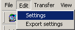

(Connection window of the FileZilla Options dialog box)
Configuration
Overview:
FileZilla supports many configuration options that you can set with the "FileZilla Options" dialog box. Click "Settings" under the "Edit" menu to open up the dialog box.

Under normal conditions you don't have to configure FileZilla. FileZilla comes with a default set of options that is optimal for most users.
The options are divided into several pages that are indexed on the left side of the options dialog. Click on any entry in the tree to open that page.
(Connection window of the FileZilla Options dialog box)
Each page deals with a separate topic and its associated options:
Connection - This page covers some general connection options
Firewall settings - Configures connections through a firewall
FTP Proxy settings - Configures through an FTP proxy
Proxy settings - Configures through SOCKS4/5 proxies
GSS support - Options for the integrated GSS support
Directory cache - Enables/disables local caching of remote server directory structure
Ident server - Enables/disables the built-in ident server.
SFTP settings - Configures settings for SFTP connections.
File transfer settings - Controls various file transfer aspects
ASCII/Binary - Transfer mode selection
Speed Limit - Transfer mode selection
Interface settings - Controls the visual layout of FileZilla
Local file list - Configures the layout of the local file list
Remote file list - Configures the layout of the remote file list
Language - Sets the language of FileZilla
Miscellaneous - Additional interface settings
File viewing / editing - Sets up filetype associations for viewing / editing remote files
Debug - Debug settings, usful to find problems